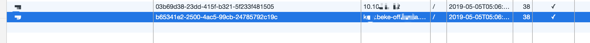
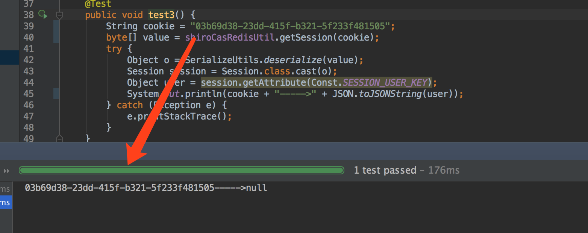

Shiro之前后端分离权限验证返回302错误
背景：在解决了上一个
shiro cas-client端登录重复重定向问题后，跳转到首页后，前端除了静态资源的http status返回 200 外，其他请求后端服务的接口全部都返回 302 Found。
302 Found是由于请求的资源被重定向后返回的，在本项目中，大部分(可以说，99% 以上都是因为 shiro 框架验证登录导致的)，之前为此解决了 OPTIONS 请求不检验登录态的问题。
通过 debug，在 org.apache.coyote.Response#setStatus line 194处打了断点后，发现 http status 302 设置是在 方法 org.apache.catalina.connector.Response#sendRedirect line 1334处设置的。代码如下：
public static final int SC_FOUND = 302
@Override
public void sendRedirect(String location) throws IOException {
sendRedirect(location, SC_FOUND);
}
其方法是 spring mvc 默认调用的。
下面是在网上对这个问题解决比较有准对性的几个链接：
最后，说一下本项目中 302 问题的原因。原因很简单，既不是前端的锅，也不是后端的锅。

前端请求写死了一个 ip，但是等使用的是域名，所以增加了两个不同域名的 cookie。
域名对应 cookie 在 redis 缓存中的结果。如下：
ip 对应的 cookie 在 redis 缓存中的结果。如下：

问题待明天确认解决。😄😄